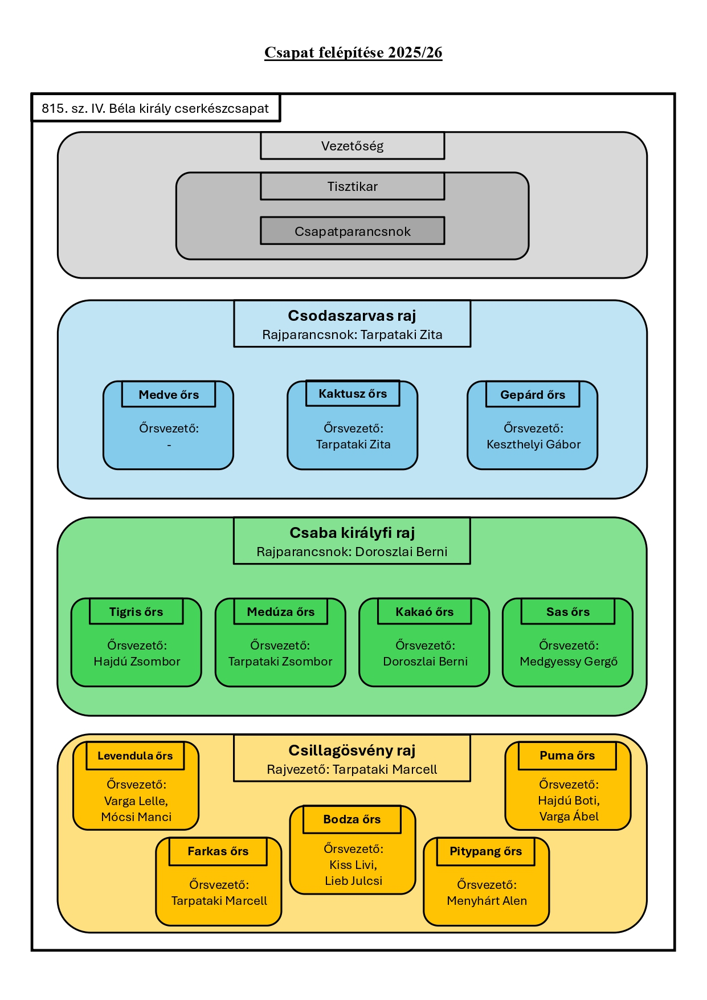
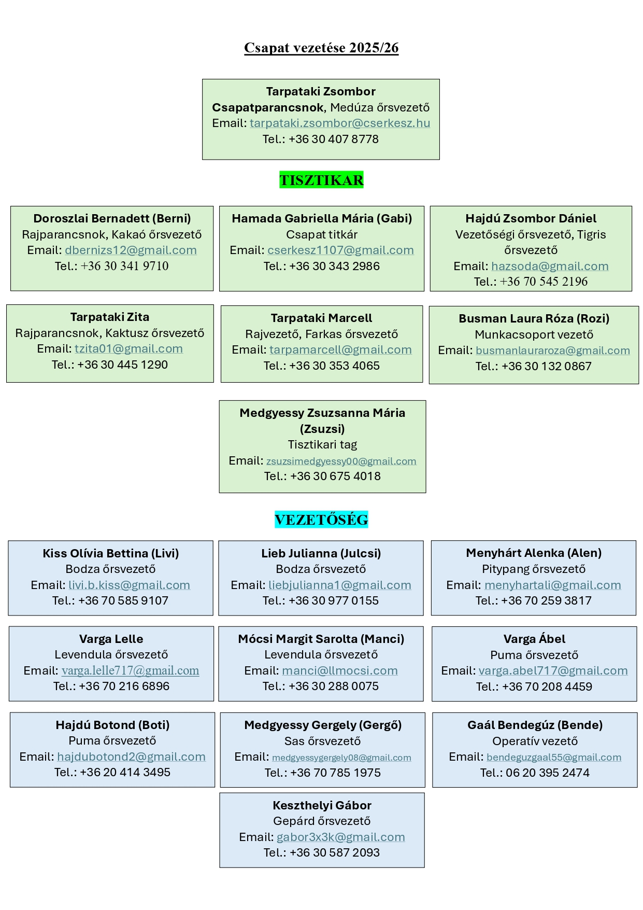

Csapatunk felépítése
Csapatunk szervezeti felépítése a Magyar Cserkészszövetség hagyományos rendszerét követi. Minden gyerek egy 6-14 fős, korosztályos, fiú vagy lány őrs tagja. A nagyjából egy korosztályba tartozó fiú és lány őrsök alkotnak egy rajt, így közösen korosztályos programokon tudnak részt venni.
A vezetőség tagjai (őrsvezetők és egyéb vezetők) tartják a programokat és szervezik a csapat mindennapi életét. Az egész csapat munkáját a csapatparancsnok fogja össze és irányítja.
Az egyszerű átláthatóságban a képek segítenek.

